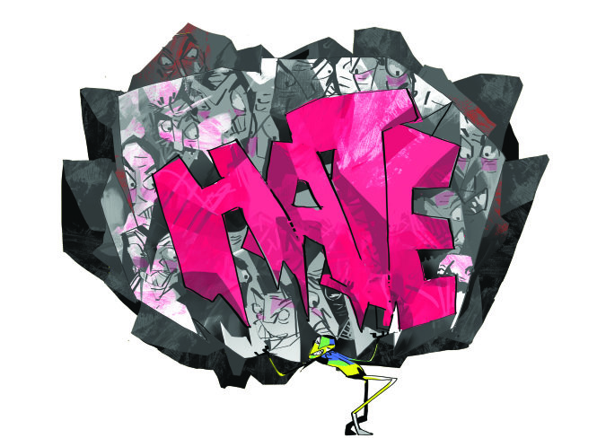

TTCT - Có điểm gì chung giữa Lê Thị Đông Phương và Nguyễn Lê Thiên Lý - hai bảo mẫu bị tuyên án tù giam vì hành hạ trẻ em, Nhâm Tiến Dũng và Nhâm Thị Hồng Phương - hai anh em bị bắt ở Thụy Sĩ vì đã ăn cắp kính, ca sĩ Hồ Ngọc Hà, dịch giả Dương Tường và nữ sinh T. 15 tuổi khi em tự tử? Họ đều đã là tâm điểm của những cơn bão mạng, là đối tượng của làm nhục công cộng ở mức độ khổng lồ.  Minh họa VIIP Đằng sau sự phục hưng đáng kinh ngạc của hiện tượng làm nhục công cộng này là những chuyển động tâm lý và xã hội gì? Tác giả Đặng Hoàng Giang - người cũng từng đi qua những cơn bão căm ghét - đi tìm câu trả lời trong loạt bài về hình hài và tâm lý của căm ghét, độc địa và tàn nhẫn. Tôi tự hỏi vì sao mình lại băn khoăn về câu chuyện của những người này - những người rõ ràng rất khác với bạn bè của tôi? Vì sao tôi không đưa họ ra khỏi đầu được, mặc dù có người đã ngồi tù hai năm nay? Tại sao, khi mà câu chuyện của những người này dường như xảy ra ở một nơi xa xôi, tôi và họ quá khác nhau, chúng tôi ở trong những thế giới không liên quan gì tới nhau? Một hôm khi đọc lại những thông tin về họ, bỗng nhiên tôi hiểu ra: mặc dù không muốn nhớ lại, tôi từng ở vị trí của họ. Tôi từng là họ, đã trải qua những gì họ trải qua, đã bị làm nhục công cộng như họ, tuy ở một mức độ khác. Tôi bắt đầu một hành trình cá nhân để cố gắng lý giải, lý giải hành vi và tâm lý của những người làm nhục, lý giải những cảm xúc mà người bị làm nhục trải qua. Và lý giải sự độc ác trong xã hội. Đối diện một đám đông reo hò Đầu tháng 3-2014, tôi trả lời phỏng vấn của một phóng viên báo Lao Động. Câu chuyện xoay quanh câu hỏi vì sao tôi lại chuyển về Việt Nam sống sau nhiều năm định cư yên ổn ở Áo, cái gì hấp dẫn tôi ở Việt Nam, quan điểm của tôi về xã hội phương Tây như thế nào và cái nhìn của tôi về khao khát hướng ngoại của người Việt ra sao. Tôi tâm sự rằng mình rời bỏ phương Tây vì sự máy móc và lạnh lùng của nó, rằng Việt Nam thú vị nhưng cũng bất an vì cái bất ngờ và khó đoán định trong cuộc sống ở đây, rằng tôi trở về vì có khả năng thử nghiệm bản thân ở nhiều lĩnh vực. Tôi cho rằng nhiều phụ huynh Việt trong khi mơ ước cho con đi du học, thờ phụng cái “văn minh” của phương Tây thì mặt khác vẫn mắc kẹt trong tư duy cổ hủ của phương Đông về bằng cấp và địa vị xã hội. Giấc mơ về phương Tây của người Việt, do đó, là một giấc mơ hời hợt - đó là luận điểm chính của tôi. Bài phỏng vấn lên trang mạng của Lao Động cuối ngày 15-3, chạy cái tít khiêu khích: “Phương Tây - một giấc mơ hời hợt”. Tối hôm đó, tôi chia sẻ bài này trên Facebook của mình. Hồi đó tôi không có nhiều bạn Facebook. 24 tiếng sau, bài có vài chục like, một số người, cả lạ lẫn quen, vào bình luận, đồng tình hoặc phản đối. Một người đang làm cho một công ty tin học ở Mỹ viết: “Anh Giang nhận xét và đánh giá về xã hội Tây sai hết cả rồi”. Một người khác cho rằng: “Cuối cùng thì vẫn tùy vào mục đích sống là gì thôi mà”. Tất cả không có gì lạ so với các bài khác của tôi. Ngày 16-3, bài phỏng vấn bắt đầu lan ra trên mạng. Phương Đông hay phương Tây, ra nước ngoài sống hay ở trong nước, về Việt Nam lập nghiệp hay ở lại cho yên ổn, cái gì hơn, chỗ nào làm ta hạnh phúc, đó là những câu hỏi cơ bản, những quyết định khó khăn của nhiều người. Trăm người trăm ý. Tôi có thể mường tượng ra điều đó. Điều cả tôi và chị phóng viên không hình dung được là cách người ta bảo vệ ý kiến của mình và những cảm xúc đi kèm của họ. 24 tiếng nữa - có lẽ đó là khoảng thời gian để bài báo đến tay cộng đồng người Việt ở nước ngoài, để họ đi làm về, ăn tối, lên mạng - một cơn bão nổ ra. Tối 17-3, trong lúc ăn tối, tôi nhận được tin nhắn của một người bạn, rào đón: “Anh bình tĩnh nhé, đừng để ý gì tới bọn họ”. “Ai? - tôi hỏi - Có chuyện gì vậy?”. Trong đầu tôi điểm danh nhanh xem mình có thể là kẻ thù của ai, nhưng không tìm ra được cái tên nào. Người bạn gửi cho tôi cái link của một trang Facebook. Nhấn vào đó, tôi được chuyển tới một diễn đàn nóng rừng rực với hàng trăm bình luận về bài phỏng vấn của tôi. Tôi đọc vài cái ở khúc đầu. “Suy nghĩ của tay no cơm, thừa sữa lại thèm chút cơm cháy đáy nồi đây mà”. “Lại một thằng cha “chiết da” quốc doanh nữa”. Một người tỏ ra thông thạo về quá khứ của tôi: “Ông này học ở Ilmelnau thuộc Cộng hòa dân chủ Đức trước đây, chất lượng thế nào thì cộng đồng người Việt ở Đức không lạ! Và loanh quanh bằng cách nào sang Áo lấy bằng tiến sĩ, rồi lại về Việt Nam thì cũng là trường hợp có một không hai”. Một ý kiến hóm hỉnh khác: “Ông này không phải là Việt kiều tại Áo, mà đang định cư ở đâu đó dưới áo một chút”.
Mặt tôi nóng bừng. Phản ứng đầu tiên của tôi là bỏ ra chỗ khác, đúng hơn là để cái điện thoại sang một bên, ngoài tầm nhìn. Đó là phản xạ chạy trốn, che mặt, muốn độn thổ - các hành vi đặc trưng của người bị làm nhục được các nhà tâm lý học mô tả trong sách chuyên môn của họ mà sau này tôi mới tìm hiểu. Tôi quay lại với bữa tối. Một lát sau, một người quen khác gắn (tag) tôi vào cái threat đó: “Anh Giang vào đây tham gia này”. Có cảm giác là mình phải nói một cái gì đó, tôi viết lại: “Anh vẫn đang lắng nghe mọi người đây”. Từ đó điện thoại của tôi cứ rung bần bật với các tin báo. Tôi cố gắng không thay đổi sắc mặt và tiếp tục chuyện trò với hai con, nhưng gặp khó khăn để tập trung. Tôi thấy mình như vừa bị tát nhiều cái, cả hai mắt tôi phải hơi nheo lại để nhìn cho rõ. Choáng váng, hoa mắt, sau này tôi mới biết cũng là những cảm giác đặc trưng mà người bị làm nhục cảm thấy. Sau bữa tối, tôi vào lại Facebook. Tất nhiên, lúc này những người tham gia trên trang kia đều đã nhìn thấy tên tôi được gắn ở đây, đã đọc câu trả lời của tôi và biết là tôi đọc được những gì họ viết. Có lẽ chính điều đó làm họ phấn khích hơn: “Đây là một tiến sĩ thất nghiệp ở phương Tây và không có cơ hội tiếp xúc với một gia đình tử tế ở đó”. “Bằng tiến sĩ của anh ấy cũng học mót của các giáo sư phương Tây. Đọc bài anh ấy biết là anh ấy học mót nhưng cũng hiểu sai: học mót cũng cần nói đúng sự thật”. “Nói chung dạng bị thiến sót nên thành thần kinh cố lảm nhảm ra chiều “phản biện” để che giấu một sự thật (có thể phũ phàng) nào đó khiến anh ku từ Áo phải bùng mịa nó về An Nam thôi, khổ!” (1 câu dài ko cần dấu ngắt câu, nhá, viết thế mềnh đã đủ chuẩn lấy tiến sĩ chưa nhở?)”. Lác đác, có người bày tỏ sự đồng tình với tôi: “Là một người lao công không biết lý luận, không thạo chữ nghĩa nhưng tôi thấy cách đặt vấn đề, cách nghĩ của ông, lựa chọn của ông về Việt Nam, những cảm nhận của ông về Việt Nam đều làm tôi cảm nhận và chia sẻ”. Tôi băn khoăn không biết mình có nên like ý kiến này không hoặc trả lời một câu kiểu: “Cảm ơn bác lao công”. Tôi không rõ người ta sẽ phản ứng thế nào khi tôi lên tiếng. Trong lúc tôi lưỡng lự thì bác lao công chìm nghỉm trong làn sóng công kích mới: “Không biết cậu này bị hiếp dâm hay làm đĩ đực thì chỉ cậu ta mới biết!”. Tần ngần một giây, tôi cuộn lại lên trên đầu trang, bản thân cũng không biết vì sao. Có lẽ tôi thầm hi vọng rằng những lời lăng nhục kia đã biến mất, tất cả là do tôi hình dung ra. Tất nhiên chúng vẫn ở đó, chúng có thật. Tôi tắt điện thoại. Lúc này tôi mới để ý là mình đang trong trạng thái bị kích động, tim đập nhanh và hơi thở ngắn. Tôi có cảm giác mình bị dồn vào một góc. Tôi thấy mình không có nhu cầu ra khỏi nhà và suy nghĩ xem có nên hủy cuộc gặp tôi đã hẹn cho sáng hôm sau không. Tôi để cái điện thoại cách xa mình mà cảm thấy nó sáng như một cục than hồng và lại có mắt theo dõi các cử chỉ của tôi. Đêm hôm đó không ngủ được, tôi hình dung ra một đám đông trên mạng đang đắc thắng vui cười, thi xem ai làm nhục giỏi hơn, ai miệt thị cay độc hơn. Một người bước lên trước liệng một hòn đá, đám đông reo hò. Người tiếp theo bước lên liệng hòn đá khác. Họ quay ra đập tay high five với nhau như khi chơi bowling đánh đổ hết cả 10 pin bằng quả bóng đầu tiên. Tôi hình dung ra họ đang thấy bản thân mạnh mẽ; họ đang là chính nghĩa, cái thiện, cái tốt đẹp; họ đang đè bẹp cái xấu xa và ngu dốt. Nếu như lúc này tôi đang đối mặt với họ trong một căn phòng, biết đâu tôi chẳng bị họ hất bia vào người, chỉ tay vào mặt, rồi vỗ tay xuống đùi cười ầm lên chế giễu. Nếu tôi ở cùng thành phố với họ, biết đâu họ sẽ liệng mắm tôm vào sân nhà tôi. Họ có thể đến trường đại học của tôi ở Vienna, vào thư viện, lấy trên giá sách xuống luận án tiến sĩ của tôi và nguệch ngoạc lên trang nhất “Học mót”, hay “Tiến sĩ - Thiến sót”. Đại loại thế. Sáng hôm sau, miệng khô, tôi cầm cái điện thoại lên, cố gắng kéo dài tới mức có thể mấy cái gõ ngón tay để vào Facebook rồi nhìn trân trân vào màn hình đang tải, giống một đứa bé theo dõi động tác của một bác sĩ đang chuẩn bị lấy máu của nó. Qua một đêm, sự giận dữ và độc địa khó mà độc đáo được nữa, các bình luận có phần lặp đi lặp lại. Chỉ có câu này nổi bật lên: “Nói gì cho ngắn mà dễ hiểu nhỉ? Thôi thế này: Nếu chẳng may bạn có hệ trọng gì ngã đường ngã chợ thì vẫn hi vọng Chính phủ Áo chắc chắn cấp tiền chôn cất chu đáo, không phải lo đâu!”. Cách hành văn không trôi chảy và có lỗi dùng từ, nhưng tôi đồng ý là câu này vừa ngắn vừa dễ hiểu. Cơn bão sôi sục trong những ngày tiếp theo. Có hai luồng khinh bỉ và buộc tội song song hình thành. Hoặc họ nói tôi “ở bên kia thất nghiệp không sống được nữa nên mới phải về Việt Nam”, hoặc “ở bên kia đầy đủ bơ sữa rồi nên mới về Việt Nam”. Tất nhiên, nếu tôi vẫn đang định cư ở bên kia thì lại càng chết với họ. Tóm lại là không có lối thoát. Khoảng một tuần sau thì tình hình yên ắng trở lại. Đám đông trên mạng dạt đi chỗ khác, lùng sục các nạn nhân tiếp theo của mình. Tôi tưởng rằng hòa bình đã trở lại với mình, nhưng Internet như một cái biển lớn, những làn sóng ngầm của nó thi thoảng lại đưa lên bề mặt những thứ nằm sâu trong lòng nó. Tới đầu tháng 12-2015, tức là nửa năm sau khi tôi kinh ngạc chứng kiến cư dân mạng “hành quyết” hai anh em Nhâm Tiến Dũng và Nhâm Thị Hồng Phương sau chuyến du lịch châu Âu của họ, vì một lý do gì đó, bài phỏng vấn của tôi lại xuất hiện và mọi chuyện lại như mới. Lần này, bài đã được chia sẻ tới hơn 8.400 lần. Tôi vào một diễn đàn - nơi vốn chủ yếu để trao đổi về công nghệ, phần mềm đồ họa, linh kiện máy tính... Nhưng ngay cả ở đây, “phương Tây hời hợt” cũng đang hot. Bình luận đầu tiên trong cái threat dài 12 trang là: “Tại sao mày không về hở thằng tiến sĩ kia?”. Cái kế tiếp: “TS chém gió ơi, về xứ Lừa bụi bặm, xảo trá này đi, ở mãi với bọn giẫy chết làm gì, lại còn đăng đàn phê phán nữa, đèo mẹ, khắm”. Rồi mấy cái khác ăn theo: “Mời tiến sĩ về VN sống để đổi cho em qua Áo nhé”. “ĐM nằm phơi chim bên EU rồi thích nói kiểu éo gì chả được”. Hơi băn khoăn, tôi tìm đọc lại bài phỏng vấn xem trí nhớ của mình còn chính xác không. Và đây, câu hỏi đầu tiên của phóng viên, ngay ở đầu trang là: “Ông đã có một cuộc sống có thể nói là giấc mơ với rất nhiều người tại một quốc gia phát triển hàng đầu châu Âu. Vì sao ông quyết định về nước?”. Có vẻ như một khi người ta đã quyết tâm làm nhục một ai thì khó có gì có thể làm lung lay ý định đó. Tôi cuộn xuống dưới và thấy có người phản pháo, “bảo vệ” tôi. “Vâng, ít nhất ông ấy cũng giỏi để có thể kiếm đc cái quốc tịch nước ngoài, để có cái mà chém gió, còn cái loại cả đời ko thoát đc lũy tre làng thì câm họng lại mà lo kiếm tiền đi”. Rõ rồi, người “bênh tôi” cũng dùng ngôn ngữ lăng nhục y như của những người kia. Tôi tắt điện thoại và không biết mình nên cười hay nên mếu.
Đi tìm tâm của cơn bão căm ghét Tôi hình dung rằng một trong những lý do để người ta cứ khư khư bám vào nỗi căm ghét của mình là họ cảm thấy rằng nếu họ dừng căm ghét, họ sẽ phải đối mặt với nỗi đau James Baldwin Tôi đã hai lần đi qua cơn bão căm ghét, mặc dù cơn sau là một cơn bão rớt. Chỉ lúc này tôi mới thấm thía được rằng cái khái niệm tiếng Anh “hate storm” mới phù hợp làm sao. Những cơn bão này hình thành như thế nào? Cái đám đông của những người căm ghét tôi đã định hình và lớn mạnh ra sao? Họ trải qua những trạng thái tâm lý gì? Liệu người ta có thể phân tích những cơn bão căm ghét trên mạng giống như các nhà khí tượng học phân tích các cơn bão thật sự không? Chúng có quy luật không? Tôi bắt tay vào tìm hiểu quá trình hình thành và nảy nở của sự căm ghét. Dường như các nghiên cứu của John Schafer và Joe Navarro cung cấp cho tôi một câu trả lời, một cánh cửa để hiểu những người tấn công mình. John Schafer và Joe Navarro là hai cựu nhân viên và điệp viên của Cục Điều tra liên bang Hoa Kỳ (FBI) và là chuyên gia trong các lĩnh vực ngôn ngữ cơ thể, phát hiện dối trá trong giao tiếp và tâm bệnh lý của căm ghét. Họ đã dành nhiều năm nghiên cứu về những người căm ghét và tiến trình tâm lý của thù ghét, đặc biệt trong giới đầu trọc ở California. Dựa vào những quan sát từ những nhóm đầu trọc này, năm 2003 Schafer và Navarro đề xuất rằng từ khởi đầu tới đỉnh điểm, một quá trình căm ghét trọn vẹn đi qua bảy bước. Ở bước một, những người căm ghét tụ tập lại. Người ta không muốn ghét một mình, họ thuyết phục, chiêu mộ người khác căm ghét cùng. Có bạn có bè làm tăng cảm giác về giá trị của bản thân và giúp họ tránh nhìn vào nội tâm để thấy những bất an của mình. Hội đoàn đem lại cảm giác về sức mạnh, nó che chở, đem lại sự vô danh và giảm thiểu trách nhiệm bản thân của mỗi người. Bước hai, nhóm căm ghét tạo lập một bản sắc. Họ dùng các biểu tượng, nghi lễ và huyền thoại để xây dựng vị thế và hạ thấp người bị ghét. Các nhóm đầu trọc thích dùng dấu chữ thập, cây thánh giá sắt và đi ủng nhà binh. Họ dùng những hành vi mang tính nghi lễ như những cái đập tay, động tác chào... để tăng cảm giác gắn bó trong nhóm. Họ nhấn mạnh rằng mình hi sinh sự dễ chịu trong cuộc sống để phục vụ mục đích của nhóm, coi mình như những người lính hiến dâng cuộc sống của mình, qua đó trao cho nó ý nghĩa và giá trị. Căm ghét là keo dính kết nối các thành viên của nhóm cũng như kết nối họ với mục tiêu chung. Ở bước ba, họ giễu cợt, phỉ báng đối tượng, qua đó củng cố hình ảnh và chỗ đứng của bản thân. Các nhóm đầu trọc dùng các bài hát và bài văn thù hận (hate literature) để tạo ra một môi trường giúp căm ghét nảy nở. Những ý nghĩ hung hăng làm người ta dễ hình dung ra các hành vi hung hăng hơn. Bước bốn khác ở mức độ lăng nhục và thóa mạ đối tượng. Nếu căm ghét nguội đi, những người ghét sẽ phải nhìn vào bản thân. Để tránh chuyện này, họ nâng mức độ sỉ nhục và công kích lên một bậc. Những thanh niên đầu trọc bắt đầu xịt graffiti miệt thị ở khu dân cư của đối tượng bị ghét, đi ôtô lòng vòng, chửi rủa từ xa. Ở bước năm, họ tấn công nhưng không dùng vũ khí. Đây là một bước quan trọng vì nó phân hóa những kẻ võ mồm và những kẻ xắn tay áo lên dùng bạo lực. Những kẻ đầu trọc trở nên hung hãn, họ đi tuần trong lãnh thổ của mình để tìm mục tiêu. Hưng phấn, chất adrenaline tràn đầy trong người, họ đi tìm cảm xúc mạnh. Căm hận tưới tắm căm hận. Sang bước sáu, nhóm căm ghét tấn công bằng vũ khí. Những kẻ đầu trọc thích sử dụng chai lọ vỡ, gậy bóng chày hay tuôcnơvit để tấn công. Những vũ khí này bắt họ phải tiến sát vào nạn nhân, mắt đối mắt, tay dính máu. Bạo lực liền tay, ở cự ly gần, cho phép họ thể hiện sự căm hận sâu sắc của mình ở cách mà súng không cho phép. Va chạm cơ thể với đối phương đem lại cảm giác quyền lực và thỏa mãn một mong mỏi sâu sắc áp đảo và chế ngự nó. Cuối cùng, ở bước bảy, đối tượng của căm ghét bị phá hủy. Quyết định được số phận của người khác, những người căm ghét cảm thấy quyền năng và sức mạnh như Chúa trời, điều này thúc đẩy họ đi tới những hành vi bạo lực tiếp theo. Cảm giác quyền lực này lấp đầy sự trống rỗng bên trong họ, cho họ cảm giác về giá trị bản thân. Ở bốn bước đầu tiên, người căm ghét thể hiện niềm tin của mình qua ngôn ngữ. Ở ba bước tiếp theo, người căm ghét hành động. Do vậy ngôn ngữ bạo lực là điều kiện cần, là xuất phát điểm cho bạo lực vật lý, đặt tiền đề cho nó. Và một điều nữa: trên thực tế, John Schafer và Joe Navarro kết luận, trên cả bình diện tâm lý và vật lý, sự căm ghét phá hủy cả người ghét lẫn người bị ghét. Nhưng chúng ta sẽ trở lại điều này sau.
Kiểm chứng lý thuyết căm ghét trong đời thực Tiến trình căm ghét bảy bước của John Schafer và Joe Navarro không chỉ giải thích những gì xảy ra trong giới đầu trọc. Người ta có thể quan sát nó ở nhiều môi trường và tập thể khác nhau: ở học đường, trong cơ quan, thậm chí trong một dòng họ. Hai tác giả đưa ra một ví dụ trong môi trường văn phòng. Tất cả bắt đầu bằng việc một vài nhân viên ghét một đồng nghiệp và bắt đầu đi tìm đồng minh, rỉ tai người khác rằng anh đồng nghiệp kia là khó ưa (bước một). Họ bắt đầu xác lập một bản sắc riêng thông qua ký hiệu, ngôn ngữ hay hành vi: một cái cười đầy ngụ ý chỉ người trong cuộc hiểu, một mật mã để loại người bị ghét ra khỏi bữa trưa chung, các hành vi khác để cô lập anh ta. Có thể họ tạo một cái tên riêng cho nhóm (bước hai). Ở thời điểm này, họ mỉa mai đối tượng bị ghét bên trong nội bộ nhóm mình (bước ba), rồi tiến tới trực tiếp hay gián tiếp lăng mạ đối tượng, cố tình để đối tượng nghe thấy những lời thóa mạ (bước bốn). Một buổi sáng, người nhân viên kia thấy bàn làm việc của mình bị xáo trộn và tấm ảnh gia đình trên bàn bị dán đè lên (bước năm). Đây là bước bạo lực đầu tiên. Ở bước tiếp theo (bước sáu), những người căm ghét phá đám công việc của đối tượng, hạ thấp uy tín của anh ta bằng nói xấu và tin đồn. Với thời gian, môi trường làm việc trở nên nghẹt thở với nhân viên này, anh ta bị phá hủy (bước bảy). Ở ngoài đời thì như vậy, còn trên mạng thì sao? Liệu một “phong trào” căm ghét trên mạng có đi theo những bước trên? Tôi muốn kiểm chứng. Và tôi đã có ngay một sự kiện, một cơn siêu bão, để theo dõi tiến trình của nó như John Schafer và Joe Navarro đã vẽ ra: những lùm xùm xảy ra xung quanh người mẫu - ca sĩ Hồ Ngọc Hà mới đây. Tôi đã có dịp kiểm chứng lý thuyết “Bảy bước đi của căm ghét”, tuy quả thật những điều trông thấy khiến tôi kinh hãi.■ Bài tiếp: “Cuộc chiến của các mẹ sề” ĐẶNG HOÀNG GIANG Nguồn: Bảy bước đi của căm ghét - Tuổi Trẻ Online
@Fr7to7 copy paste thế này vừa dài lại tốn diện tích. Chỉ cần post 1 link là xong mà. Fr7to7 xem ý tưởng lập nhà riêng của tớ ở đây Nhà riêng thì mọi người có thể post gì họ muốn. Quan điểm cá nhân thôi là tớ thấy copy paste tin public thế này nó hơi giống spam à.
Mình nghĩ việc copy paste lại bài viết thế này sẽ giúp các thành viên diễn đàn nhìn trực quan hơn và ko cần phải qua trang gốc để xem và cũng tiện thảo luận trong đây hơn.Mình k nghĩ thế này là spam vì spam là việc post bài với 1 nội dung lặp đi lặp lại.Những bài post trên của mình đều là những phần của nội dung bài viết thống nhất
Vì trí thông minh nội tậm (Intrapersonal Intelligence) của đa phần người dân quá tệ hại, phần con nhiều hơn phần người.